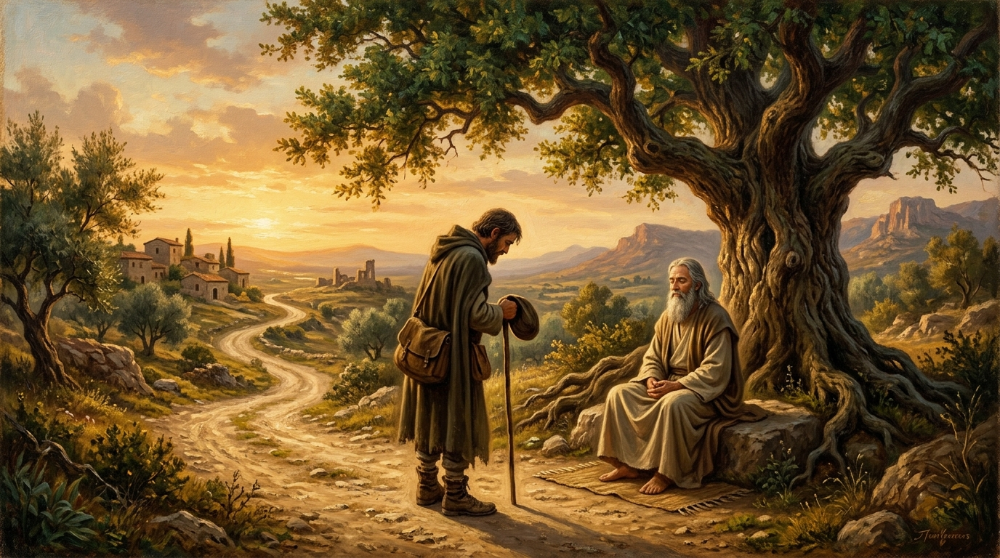

The End of the Road
A Tale of John in the Kali Yuga and the Nectar on the Traveller’s Tongue

“Traveller, the nectar you seek is already on your tongue... The next step is not outward. It is inward. Into the quiet center where the road began.” — Trevor Swistchew
The Dialogue at the Crossroads in Kali Yuga
Archival Research & Thematic AnalysisThe Sickness of the Age
John represents the modern soul caught in the Kali Yuga—running ceaselessly from hunger, loneliness, memory, and death. Running becomes an addictive compulsion, a distraction from facing the hollow within.
Once upon a time in Kali Yuga, when the world felt thin and worn and every soul seemed to be running from something John E. Sprokitt legged it down a dusty road toward a village where he hoped to find work, a meal, and maybe a moment’s rest from the bite of existence. His boots were scuffed, his belly hollow, his mind full of half forgotten dreams and the rough charm of a wanderer who had seen too much and understood too little.
By the roadside sat a man with a beard and a robe, quiet as a stone that had decided to breathe. He didn’t move, didn’t blink, didn’t call out. He simply was, wrapped in a stillness that seemed older than the age itself. John slowed, stared, then swaggered over with his finest Clockwork Orange flourish and said, “Brother, thou hast the look of Beethoven on thy fizzog and a most pleasing countenance. Pray tell this wandering traveller how thou camest to this blessed state.” The man lifted his eyes, and his smile widened just a fraction, the way dawn widens when it chooses to become day. “Friend,” he said, “I did not come to this state. I simply stopped leaving it.”
John frowned, because that wasn’t the sort of answer you could tuck into your pocket and take to the pub. But the man continued, his voice soft and heavy with ages.
John blinked, unsure whether he was hearing poetry or truth.
John shifted, the dust tasting suddenly sweeter. “Brother,” he said, “thou speakest like a man who’s swallowed the whole cosmos and found it tasted of warm milk and honey. But I’ll tell thee plain: the world bites. Hunger bites. Cold bites. Folk bite harder still. And when a man’s belly growls louder than his soul, he listens to the belly.”
The man’s smile didn’t change. He simply listened.
The bearded man’s voice rose again, warm as nectar. “Traveller, the nectar you seek is already on your tongue. When you felt that stirring, that was the Self remembering itself through you. You speak of hunger and cold and you are right—Kali Yuga bites. But even in its darkest hour, the divine does not vanish. It hides in the breath you take without noticing. It hides in the ache in your feet. It hides in the stranger’s smile. It hides in the very hunger that drives you forward. The Self does not abandon you. It moves you.” John listened, the road quiet around them.
The man leaned closer, whispering like thunder wrapped in silk. “The next step is not outward. It is inward. Into the quiet space beneath thought. The place where the noise ends and the nectar begins. When you walk to the village, walk as the Self walking. When you eat your meal, eat as the Self nourishing itself. When you work, work as the Self expressing its strength through your hands. Nothing is separate. Nothing is lost. Nothing is outside the divine.”
He closed his eyes. “Go on, John. The nectar is already flowing in you.”
John stood there, boots planted, belly still hungry, but the hunger no longer felt like an enemy. The road no longer felt like exile. The village no longer felt like a destination. Everything was simply part of the same great breathing, and he was inside it, not outside looking in. The chase was over because he finally saw there was never anything to chase. The search resolved because the seeker had stopped running from himself. The circle completed because he recognised he had been walking its circumference all along.
He nodded once to the bearded man—not in reverence, not in submission, but in recognition. Two sparks acknowledging the flame they share. Then he turned toward the village, and the road felt different beneath his feet, as though it had been waiting for him to walk it with this new clarity.
Behind him, the bearded man remained seated, silent as a mountain. No blessing. No farewell. Just completion.
And John walked on, aware of his place in the world, aware of the unity beneath the noise, aware that the circle had run and brought him back to himself.